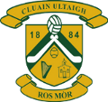
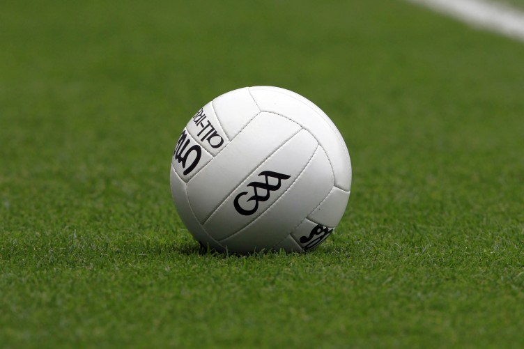

Sport
Camogie
• I am an active member of Clonoulty Rossmore Camogie club.
• I have played for Clonoulty since I was 8.
• Last year we got to the Senior County Final but unfortunately we lost.
• I have won many county final medals over the years.
• I won my last county final minor in 2017
Hockey
• I played hockey with Ursuline Secondary School Thurles.
• I played it from 1st Year to 5th Year.
• I won many munster final medals throughout my years playing.
• I captained the Junior B team when i was in 3rd year.
Football

• I played Ladies football for Boherlahen Dualla Ladies football club.
• I played with them for 7 years.
• We won the minor County Final in 2016.
• We got to the Senior County Final in 2017 but unfortunately we lost.